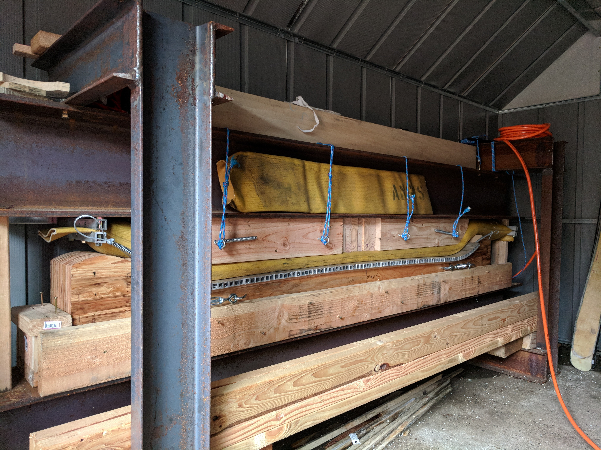

A press is arguably the most diffictult piece of equipment to come by for ski building. Without a press there is no way to create a rocker/camber profile in skis. Presses are also important because they provide the pressure needed to form the ski materials to their shape. A commercially sold ski press is rather rare and expensive. Companies that need them tend to build them on their own. Inspired by ON3P I decided to do the same. The result was a 1500 pound hunk of metal.

A ski press is absolutesly necessary for ski building but a fantastic
ski press does not ensure high quality skis. For that there is still
so much to take into account. The two reamining major keys are the
ski materials and the ski design.
Enter Photo here
Enter Photo here
Metropolitan Learning Center
Portland, OR, USA
Big Sky Resort
Big Sky, MT, USA